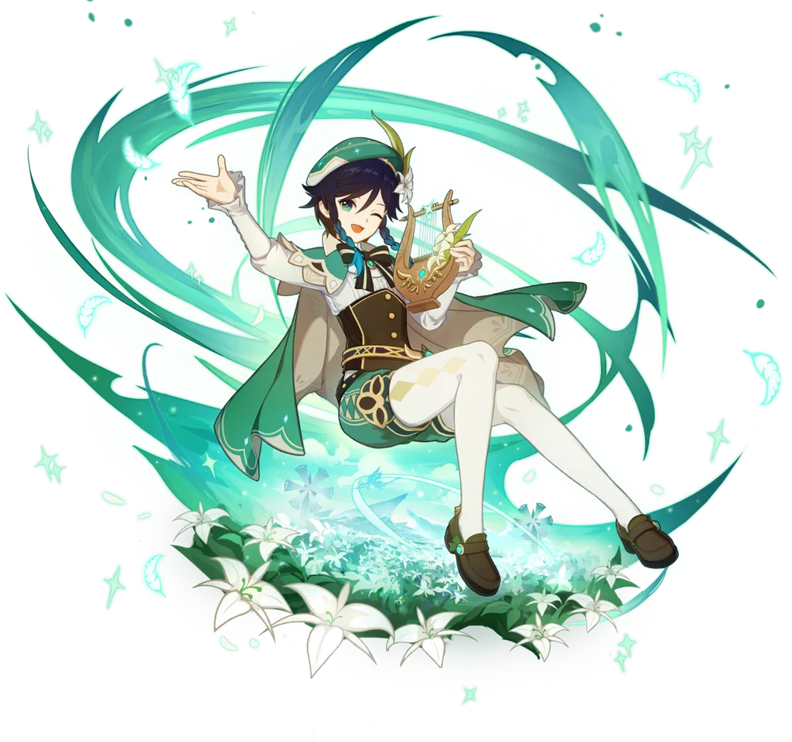
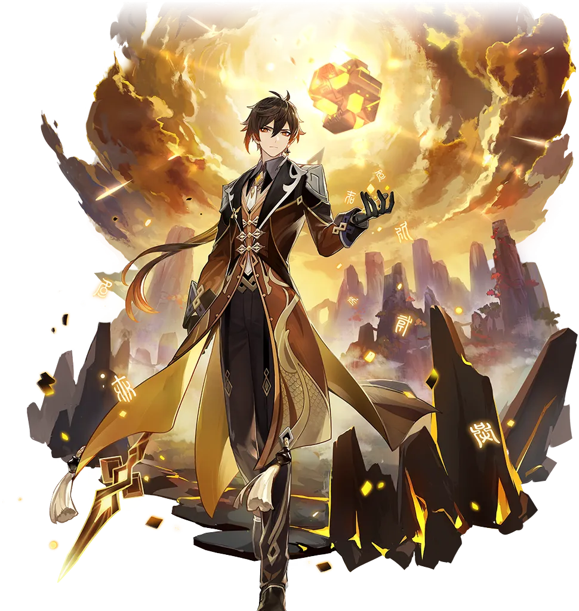
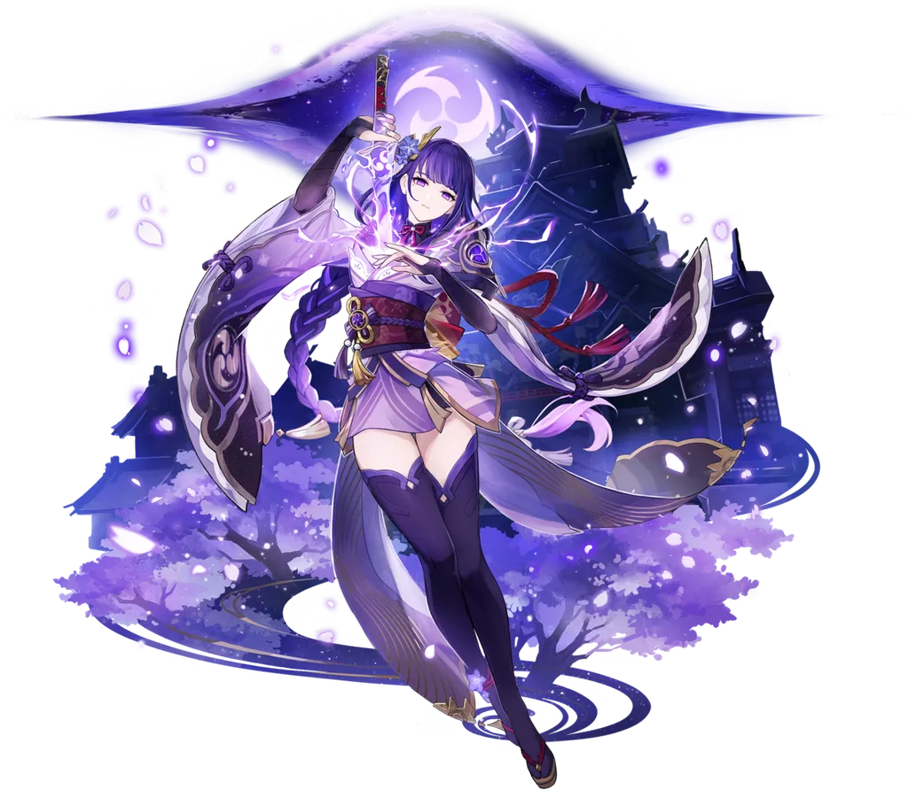
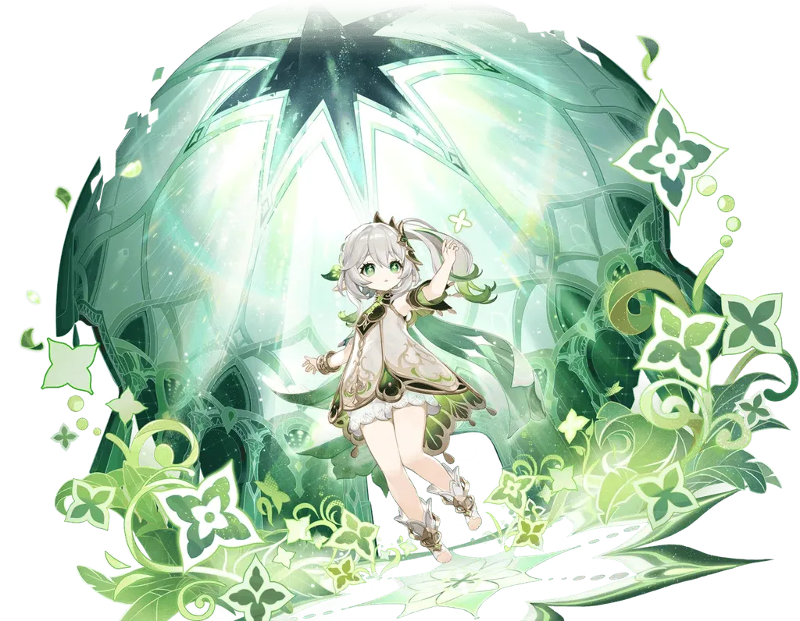
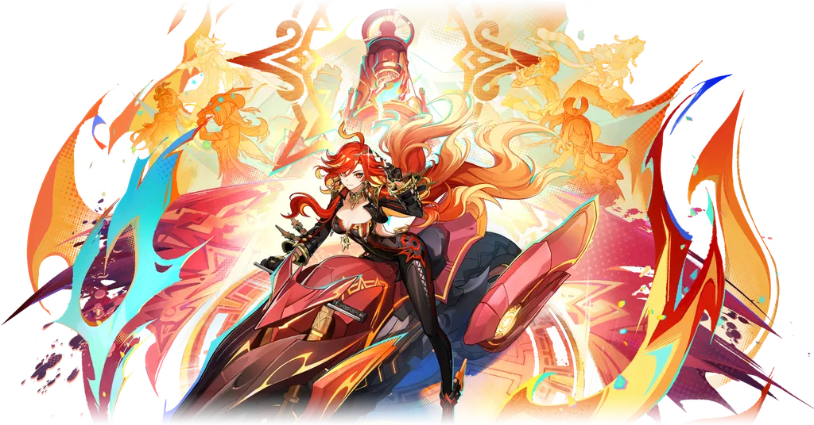

风起时，第一次爬上大树
在蒙德，我学会了不急着做任务。先听风，先看云，先和在树下打盹的猫打个招呼。
蒙德风初见
不是攻略，也不是测评。只是几个普通玩家在提瓦特停下来的瞬间：风、灯、雷雨、书页和一场谢幕。

在蒙德，我学会了不急着做任务。先听风，先看云，先和在树下打盹的猫打个招呼。

璃月港的灯会让我想起家乡的夜市。人挤人，灯连灯，热闹里有一种很踏实的安心。

稻妻的故事很长，雷声也很大。可真正留下来的，是那些愿意为“不变”付出代价的人。

须弥的雨林像一本翻不完的书。我开始习惯先提问，再找答案；先看见，再判断。

枫丹的歌剧院让我意识到，生活里那些不起眼的出场，也值得认真对待。

于是有了这本手札。用 HTML 搭骨架，用 CSS 调光线，用 JavaScript 让元素真的“反应”起来。